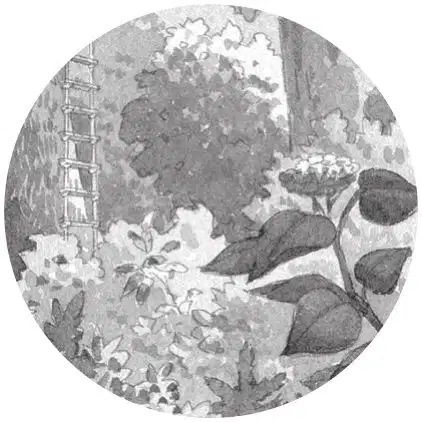
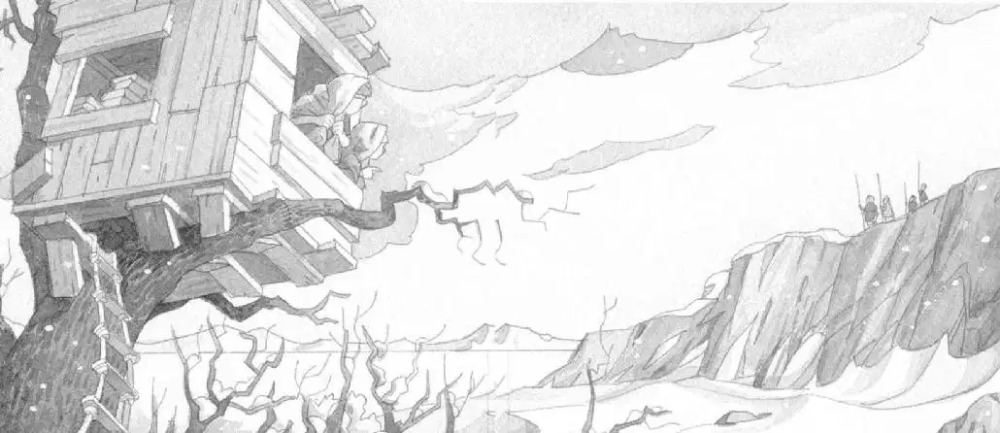

杰克、安妮和小老鼠朝窗外望去。
灰蒙蒙的天空中飘着雪花。
树屋落在了树林里最高的一棵树上，周围的参天大树都是光秃秃的。
树林坐落在一片开阔的白色原野上。远处是怪石嶙峋的悬崖。
“真……真冷啊！”安妮说。她的牙齿在不停地打架。她用毛巾紧紧地裹住自己的身体。
“吱——吱。”
听上去，小老鼠也觉得冷了。
“可怜的花生米，”安妮说，“我把你放在杰克的背包里吧，那里面会暖和一些。”
安妮把小老鼠塞进了杰克的背包。
“我们必须赶紧回家，”杰克说，“我们需要保暖的衣服。”
“现在没办法回家，”安妮说，“我们肯定找不到那本宾夕法尼亚的书，因为只有完成了任务才能看到它，你忘了吗？魔法就是这么规定的。”
“哦……好吧。”杰克说。他环顾了一下四周。那本每次都把他们带回家的关于宾夕法尼亚的书，此刻果然消失得无影无踪。
安妮再一次朝窗外看去。“我们现在到底是在哪儿呢？”她疑惑地问。
“我会弄清楚的。”杰克说。
他拿起那本摊开的书，念出封面上的字：“冰川时代的生活。”
“冰川时代？”安妮说，“怪不得这么冷呢。”
“我们最好赶快找到第三样东西，”杰克说，“晚了肯定会冻死的。”

“看，”安妮小声说道，“有人。”
她用手指着窗外。
杰克也看见了：悬崖上有四个身影，两个大人、两个小孩——手里都拿着长矛。
“他们是谁？”安妮好奇地问。
“我在书里查查看。”杰克说。

他看见书里有一幅图片上画着几个人。他把上面的文字念给安妮听：
早期的欧洲现代人类被称为克鲁马努人。
在冰川时代晚期的欧洲，这些人有时会生活在悬崖上的洞穴里。
“他们为什么拿着长矛呢？”安妮问。
杰克翻过一页，又找到一幅克鲁马努人的图片。他大声念道：
克鲁马努人经常全家一起狩猎。
他们在地上挖很深的坑，然后用树枝把坑盖起来，做成陷阱。
等驯鹿和猛犸象来的时候，就把它们赶进去。
“把动物困在陷阱里……那它们该有多难过啊。”安妮说。
“不，不能这么想。”杰克说，“这些人不打猎就活不下去了。要知道，在他们那个时候可没有超市。”
远处的那家人翻到悬崖的另一边，不见了。
“快走吧，我快冻死了。”杰克焦急地说，“我们得抓紧时间，趁克鲁马努人打猎的时候，找到那样东西。”
“可是我还想见见那家人呢。”安妮说。
“别胡扯了。”杰克说，“他们没有书可看，不会从书上知道我们是谁。他们会把我们当成敌人，朝我们扔长矛的。”
“哎呀！”安妮说。
杰克把书放到一边。
“吱吱。”小老鼠从背包里探出了脑袋。
“待在里面别动。”安妮吩咐道。
杰克紧了紧背包，开始顺着绳梯往下爬。
安妮也跟了下来。
到了冰雪皑皑的地面上，他们冷得互相紧靠在一起。
寒风刺骨。杰克用毛巾裹住自己的脑袋。乱纷纷的雪花打在他的眼镜片上。
“喂，杰克，”安妮说，“你看我。”安妮戴上了她的游泳镜。“这样就能挡住雪花了。”她说。
“真是一个好主意。”杰克赞叹道，“再用毛巾把你的脑袋包住。你身体的大部分热量都是从头部散发出去的。”
安妮用毛巾包住了脑袋。
“我们应该找一个洞穴或者什么暖和的地方。”杰克说。
“我相信在那些悬崖上肯定有洞穴。”安妮说。
她和杰克开始在白雪茫茫的荒野上穿行。积雪还不太深，但是风刮得很大。
“我怎么说的来着！”安妮指着岩石间的一处豁口——是洞穴。
他们朝洞穴跑去。
“当心。”杰克提醒道。他们小心翼翼地走进了昏暗的洞穴。
虽然里面只比外面稍微暖和一点点，但是至少风刮不进来了。
在灰蒙蒙的光线里，他们跺了跺沾在运动鞋上的雪。
安妮摘掉了游泳镜。
“这里有一股臭味。”杰克说。
“是啊，闻着像一条淋了雨的狗。”安妮回答。
“让我看看能发现一些什么。”杰克说。
他掏出了那本冰川时代的书。
“我去里面看看吧。”安妮说，“说不定那个以字母M开头的东西就在这洞穴里呢。然后我们就能回家暖和暖和了。”
杰克站在洞口，这样他才能看清书上的字。
“这个洞穴里有许多树枝。”安妮说。
“什么？”杰克问。他并没有把目光从书上移开。
“不，等一等。我想它们都是骨头。”安妮说。
“骨头？”杰克问。
“是啊，这里面有好多的骨头，地上全是。”安妮说
这时，杰克在书里翻到一幅图片，图片上的洞穴里堆满了骨头。
“我好像听见了什么动静。”安妮说。
杰克把图片下方的文字读了出来：
冰川时代的大洞熊身高超过2米。这些熊比今天的灰熊还要高大和凶猛。
大洞熊的洞穴里堆满了它们祖先的骨头。
“安妮！”杰克轻声叫道，“快回到这儿来！”
他们是在一头大洞熊的洞穴里。